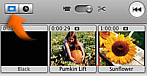

There's a space after I move a clip
When you drag a clip to the left or right in the timeline viewer, you create a gap. When you view the gap in the clip viewer, the gap looks like a black clip. You can work with this black clip as if it were blank footage, adding titles, changing the clip's color and duration, and so on. You can also delete a black clip to eliminate the gap between video clips.

To delete an unwanted color clip:
- Click the Clip Viewer button (shown above).
- Click the black clip to select it.
- Press the Delete key or choose Edit > Clear.
Related Topics
Creating a black or color clip
 Was this page helpful? Send feedback.
Was this page helpful? Send feedback.